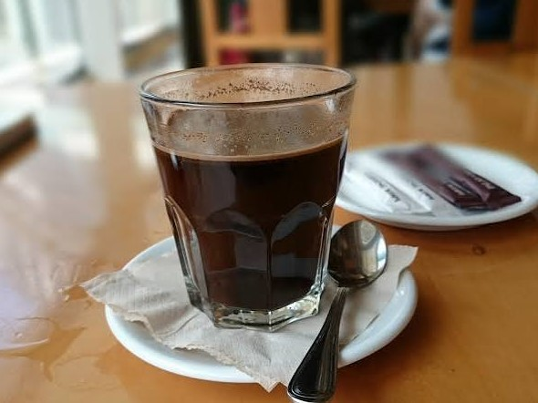
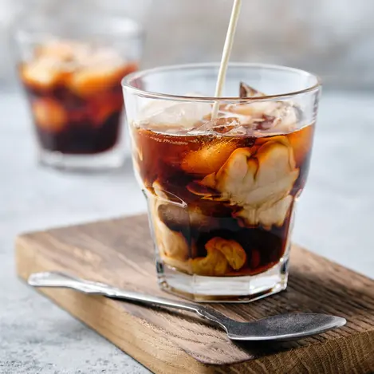
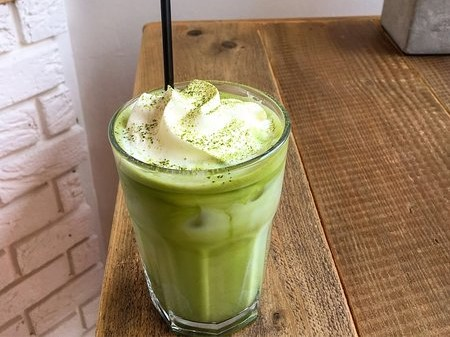

Kopi Tubruk Signature
Seduhan biji kopi lokal Pekalongan bertaraf pilihan dengan aroma rempah yang khas dan konsisten.
Rp18.000
UMKM Pekalongan
Kopi lokal pilihan untuk teman belajar, bekerja, dan berdiskusi.


Seduhan biji kopi lokal Pekalongan bertaraf pilihan dengan aroma rempah yang khas dan konsisten.
Rp18.000

Ekstraksi dingin selama 12 jam dipadukan manisnya gula aren murni. Rasanya halus dan tidak terlalu asam.
Rp22.000

Pilihan non-kopi dari teh hijau Jepang murni yang dipadukan dengan susu segar yang creamy dan lembut.
Rp22.000
Alamat: Jl. Hayam Wuruk No. 12, Pekalongan, Jawa Tengah
Jam layanan: Setiap hari, 08.00–20.00 WIB